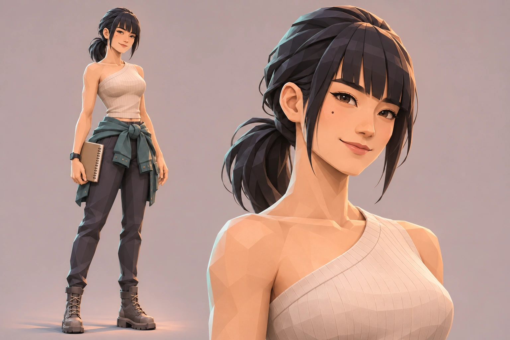
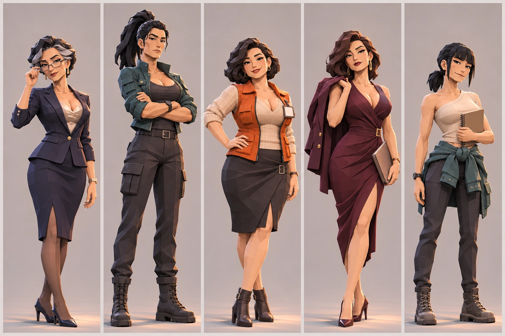
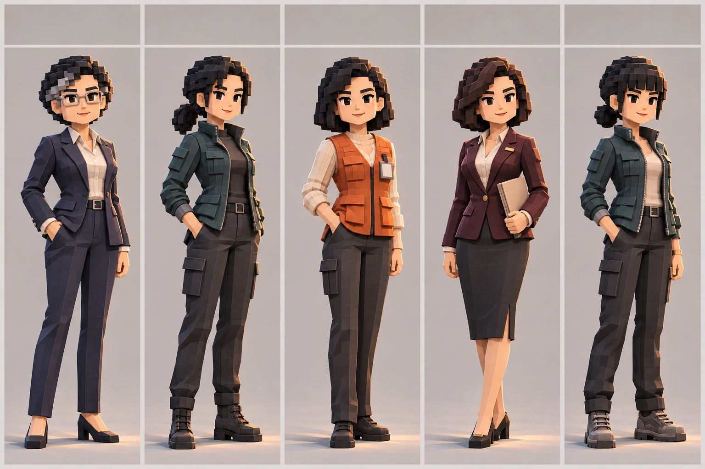
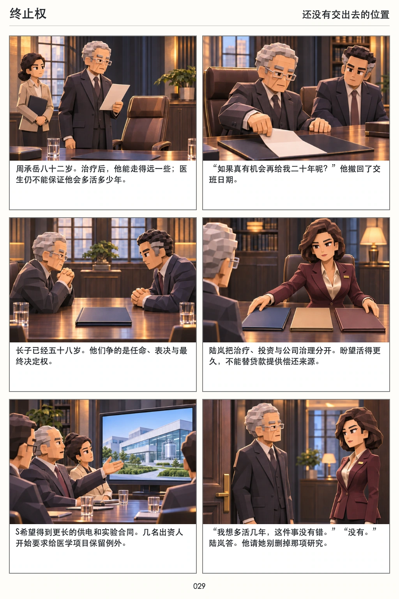
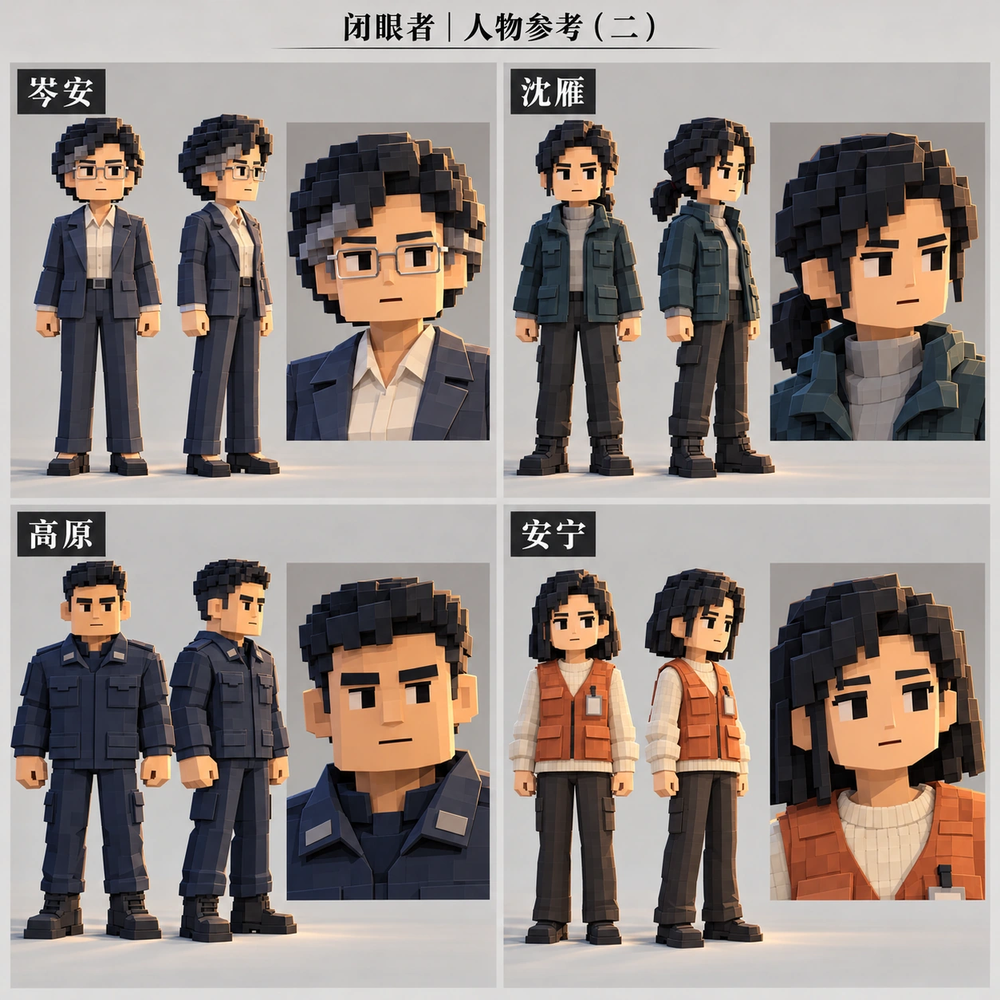
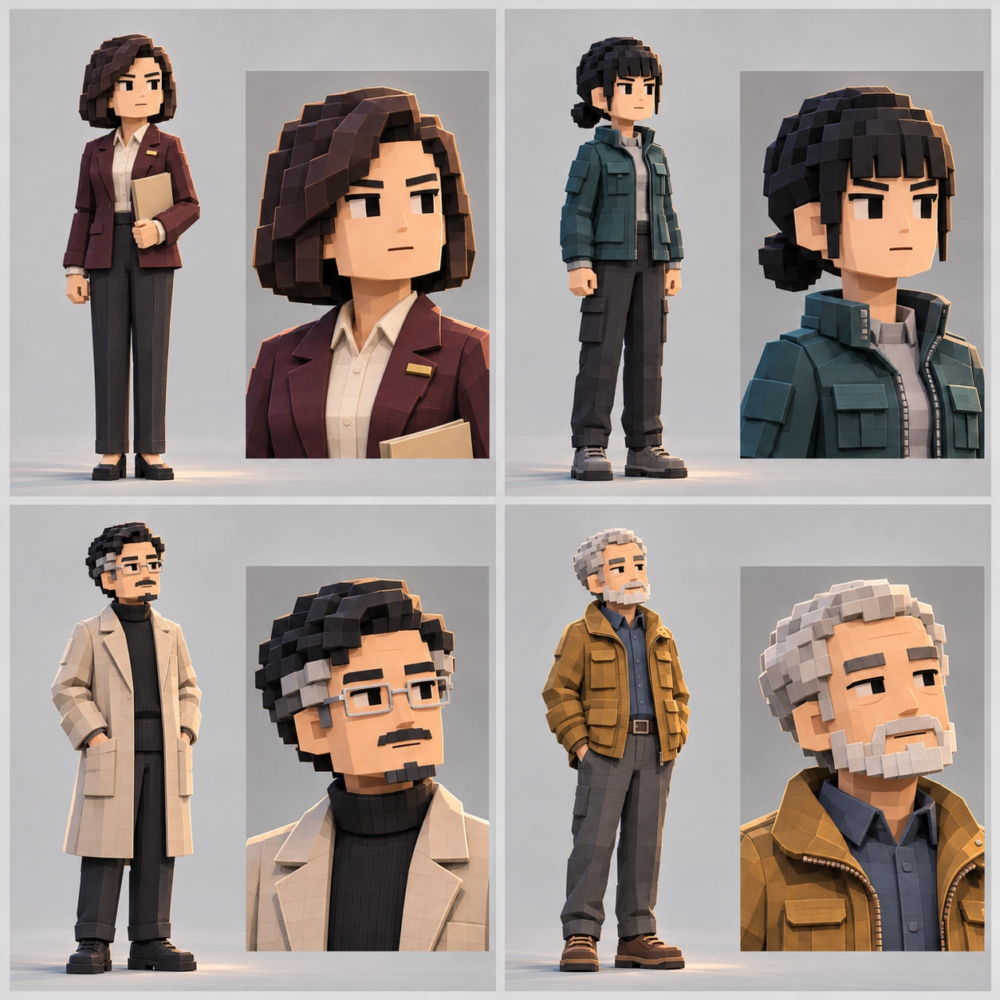

造型试稿 · 尚未替换正式漫画
年轻成年方向 · 许知微
本轮单独探索许知微22—24岁的年轻成年外形：五官更清秀，眼神明亮，笑容自然。保留黑发、刘海、低马尾与青绿服装色系。仅为视觉试稿，不修改小说中的人物年龄、学历与经历。
全身与面部近景

点图可查看大图。此前五人造型与第一稿分镜仍保留在下方。
此前五人第三稿 · 对照

逐位放大查看
展开第二稿：调整外形年龄之前

展开第一稿：人物相似、性感不足

第一稿 · 陆岚分镜对照
以下仍是第一稿的分镜试排。第三稿当前展示人物方向，尚未替换分镜；对白、页码与剧情保持原样。



展开原人物设定

